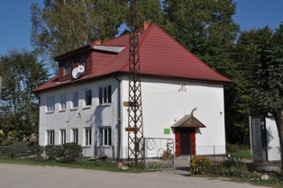

Как создавалась экспозиция
Экспозиция экомузея — словно живой организм, постоянно растущий и совершенствующийся, дополняющийся новыми экспонатами. Она не стоит на месте: растёт, меняется, обретает новых друзей в лице посетителей и специалистов. Восемь лет она путешествовала по Калининградской области, пока не обрела постоянное место в посёлке Краснолесье.
Её путь начался с фотовыставки «Роминтская пуща: между прошлым и будущим», открывшейся 14 февраля 2002 года в отделе природы Калининградского областного историко-художественного музея. Тогда многие калининградцы впервые узнали о Виштынецкой возвышенности, Роминтской пуще, её увлекательной истории и великолепной природе.
Через полгода, 3 августа, в музее Кристийонаса Донелайтиса выставку встречали местные жители посёлка Чистые Пруды, литовские гости и граждане Германии, покинувшие эти края полвека назад. Почётным гостем был доктор Вольфганг Роте, чьи фотографии также послужили основой выставки. В начале 2004 года её увидели жители Нестерова.
Каждый раз, переезжая с места на место, выставка менялась и дополнялась новыми материалами. 22 мая 2004 года в стенах старинной кирхи она вновь открылась уже как полноценная экспозиция, повествующая об истории Виштынецкой возвышенности со времён ледниковой эпохи, о природе и человеке, любви и горе, красоте и радости, прошлом и будущем этой земли.

На территории музея в 2015 году открылась экспозиция под открытым небом «Каменные истории», посвящённая происхождению горных пород и их использованию в культуре.
Подробнее об экспозиции «Каменные истории»